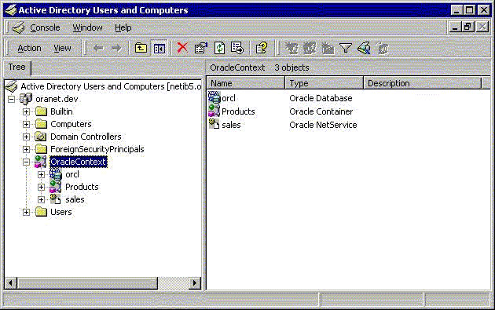

Overview of Oracle Components That Integrate with Active Directory
The following Oracle Database features support or have been specifically designed to integrate with Active Directory:
- About Directory Naming
Oracle Database provides Oracle Net Services directory naming, which makes use of a directory server. - About Automatic Discovery of Directory Servers
Oracle Net Configuration Assistant provides automatic discovery of directory servers. - About Integration with Windows Tools
Describes about the Windows integration tools. - About User Interface Extensions for Oracle Net Directory Naming
The property menus of Oracle Database service and net service name objects in Windows Explorer and Active Directory Users and Computers have been enhanced. - About Enhancement of Directory Object Type Descriptions
Oracle directory object type descriptions in Active Directory have been enhanced to make them easier to understand. - About Integration with Windows Login Credentials
Oracle Database and configuration tools can use the login credentials of the Windows user currently logged on to connect to Active Directory without having to reenter the login credentials. - Overview of Oracle Directory Objects in Active Directory
Learn about Oracle directory objects in Active Directory.
Parent topic: Using Oracle Database with Microsoft Active Directory
About Directory Naming
Oracle Database provides Oracle Net Services directory naming, which makes use of a directory server.
This feature has been enabled to work with Microsoft Active Directory. Directory Naming enables clients to connect to the database making use of information stored centrally in an LDAP-compliant directory server such as Active Directory. For example, any net service name previously stored in the tnsnames.ora file can now be stored in Active Directory.
About Automatic Discovery of Directory Servers
Oracle Net Configuration Assistant provides automatic discovery of directory servers.
When you select Active Directory as the directory server type, Oracle Net Configuration Assistant automatically discovers the directory server location and performs related tasks.
About Integration with Windows Tools
Describes about the Windows integration tools.
Oracle Database services, net service names, and enterprise role entries in Active Directory can be displayed and tested in the following Windows tools:
-
Windows Explorer
-
Active Directory Users and Computers
Windows Explorer displays the hierarchical structure of files, directories, and local and network drives on your computer. It can display and test Oracle Database service and net service name objects.
Active Directory Users and Computers is an administrative tool installed on Windows servers configured as domain controllers. This tool enables you to add, modify, delete, and organize Windows accounts and groups, and publish resources in the directory of your organization. Like Windows Explorer, it can display and test Oracle Database service and net service name objects. Additionally, it can manage access control.
About User Interface Extensions for Oracle Net Directory Naming
The property menus of Oracle Database service and net service name objects in Windows Explorer and Active Directory Users and Computers have been enhanced.
When you right-click these Oracle directory objects, you now see two new options for testing connectivity:
-
Test
-
Connect with SQL*Plus
The Test option tests whether the user name, password, and net service name you initially entered can actually connect to Oracle Database. The Connect with SQL*Plus option starts SQL*Plus, which enables you to perform database administration, run scripts, and so on.
Related Topics
About Enhancement of Directory Object Type Descriptions
Oracle directory object type descriptions in Active Directory have been enhanced to make them easier to understand.
In the right pane of Oracle Directory Objects in Active Directory Users and Computers, for example, the Type column reveals that sales is an Oracle Net Service name.
About Integration with Windows Login Credentials
Oracle Database and configuration tools can use the login credentials of the Windows user currently logged on to connect to Active Directory without having to reenter the login credentials.
This feature has the following benefits:
-
Oracle clients and databases can securely connect to Active Directory and retrieve the net service name.
-
Oracle configuration tools can connect automatically to Active Directory and configure Oracle Database and net service name objects. The enabled tools include Oracle Net Configuration Assistant and Database Configuration Assistant.
-
Oracle clients can make secure access over the internet to avoid anonymous binds to the directory. The enhanced security enables the sites to restrict access to Database Service by setting access control (ACL) on Database Service DN in Directory Server. The enhancement gives clients the option to use authenticated binds for LDAP name lookup. Clients have access to Database Service object if the object (DN of Database Service Entry) has been configured with restrictive access control.
Configuration on machines that require authenticated name lookups
Add the following entry in sqlnet.ora to enable authenticated name lookup:
names.ldap_authenticate_bind = TRUE
Overview of Oracle Directory Objects in Active Directory
Learn about Oracle directory objects in Active Directory.
If Oracle Database and Oracle Net Services are installed and configured to access Active Directory, then Active Directory Users and Computers displays Oracle directory objects, as illustrated in Oracle Directory Objects in Active Directory Users and Computers:
Figure 14-1 Oracle Directory Objects in Active Directory Users and Computers
Description of "Figure 14-1 Oracle Directory Objects in Active Directory Users and Computers"
Oracle Directory Objects describes the Oracle directory objects appearing in Oracle Directory Objects in Active Directory Users and Computers.
Table 14-1 Oracle Directory Objects
| Object | Description |
|---|---|
|
|
The domain in which you created your Oracle Context. This domain (also known as the administrative context) contains various Oracle entries to support directory naming. Oracle Net Configuration Assistant automatically discovers this information during Oracle Database integration with Active Directory. |
|
|
The top-level Oracle entry in the Active Directory tree. It contains Oracle Database service and net service name object information. All Oracle software information is placed in this folder. |
|
|
The Oracle Database service name used in this example. |
|
|
Folder for Oracle product information. |
|
|
The net service name object used in this example. |
|
|
Folder for the Oracle security groups. Enterprise users and roles created with Oracle Enterprise Security Manager also appear in this folder. |